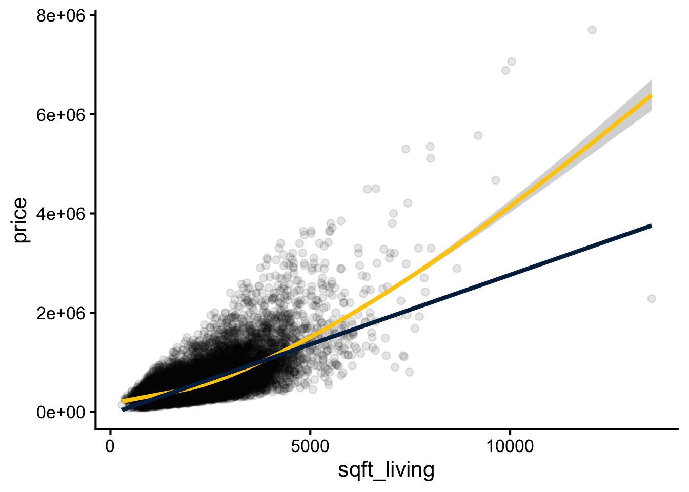
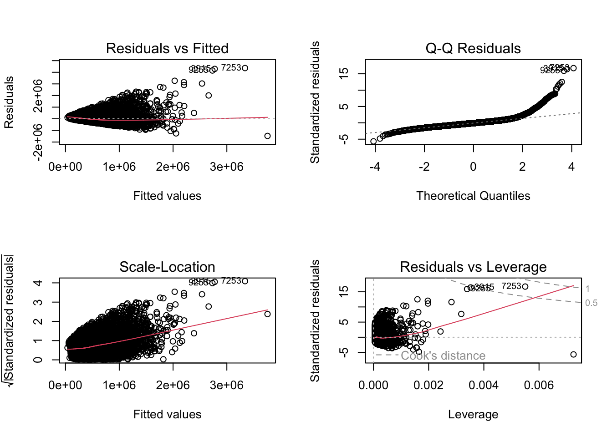
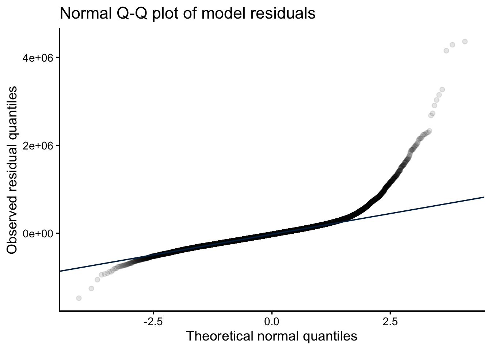
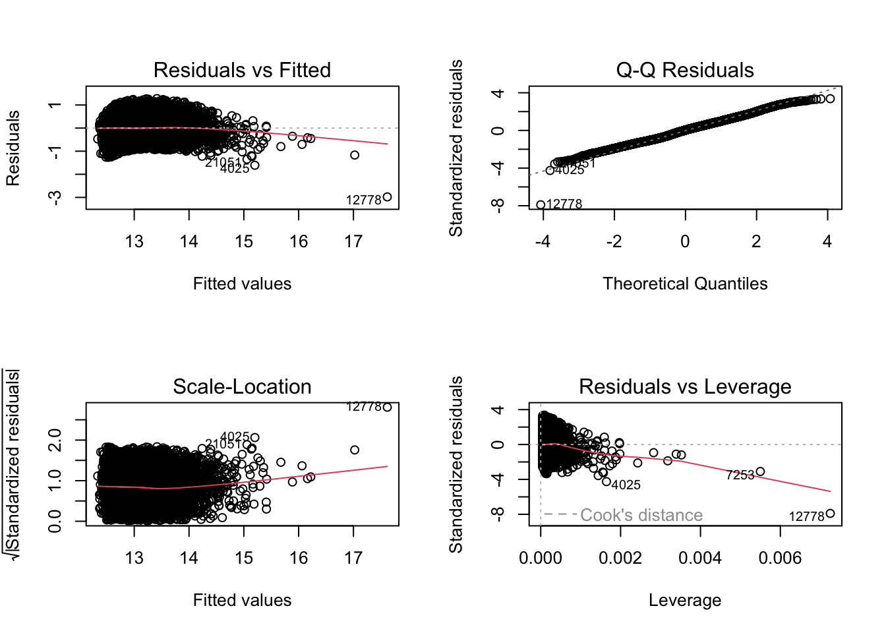
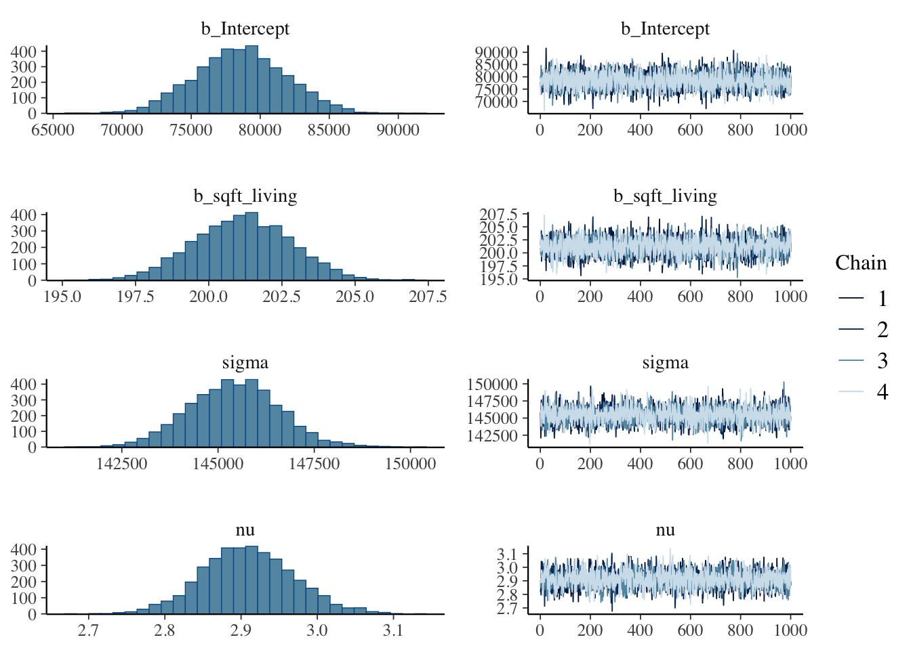
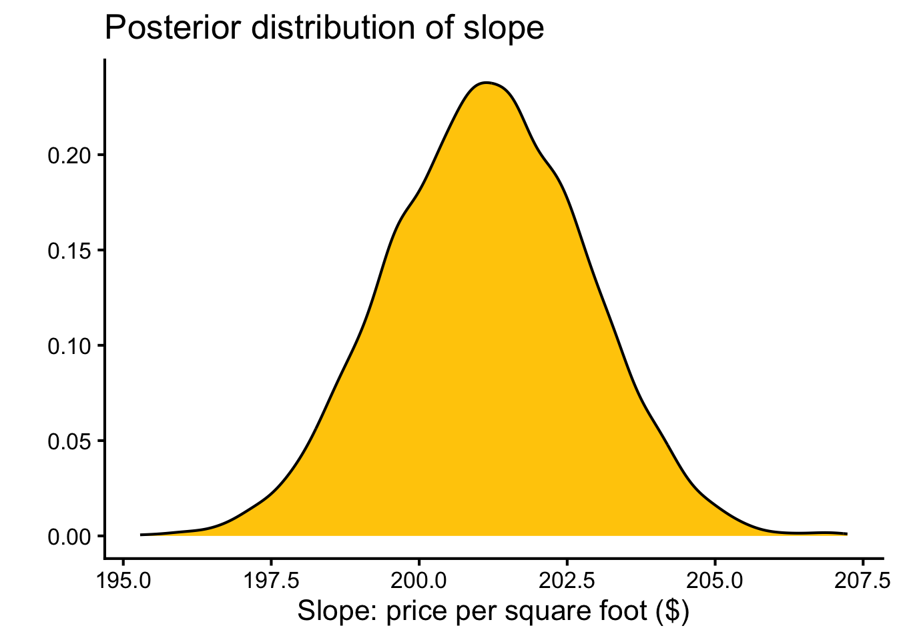
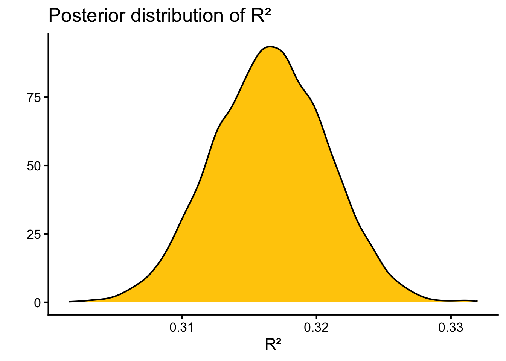
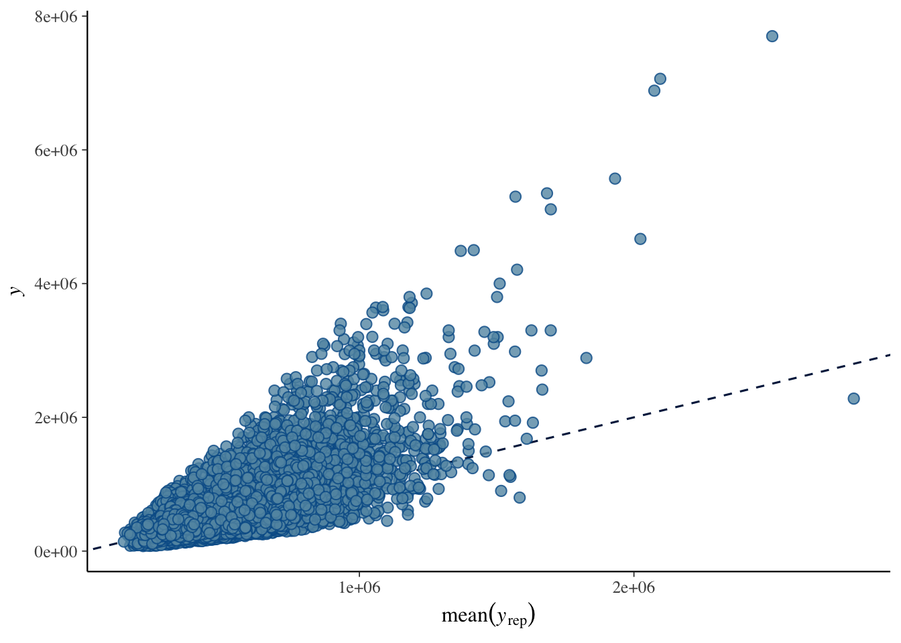
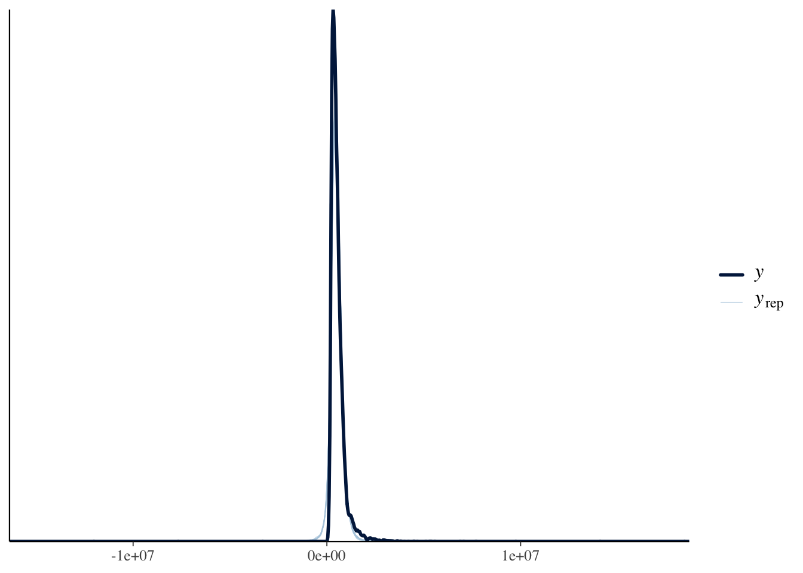

library(tidyverse)
library(moderndive)
library(broom)
library(knitr)Correlations and Linear Models
We will use the house_prices dataset from the moderndive package, which contains sale prices and characteristics of houses in King County, Washington. Here we explore how the square feet of living space (sqft_living) relates to sale price.
color_scheme <- c("#00274c", "#ffcb05")Visualizing a Relationship
The first step is always to plot the two variables against each other. Here we overlay both a smoothed (loess) curve and a linear fit to see whether a straight line is a reasonable description of the relationship.
ggplot(house_prices, aes(y = price, x = sqft_living)) +
geom_point(alpha = 0.1) +
geom_smooth(method = "loess", color = color_scheme[2]) +
geom_smooth(method = "lm", color = color_scheme[1]) +
theme_classic(base_size = 16)
The relationship appears approximately linear (blue line), though the loess curve (maize) suggests a slight upward bend at larger values, indicating some non-linearity. We will address this in the Non-Linear Relationships section.
Quantifying the Relationship: Correlation
Before fitting a regression model it is useful to quantify the strength of the association with a correlation coefficient. There are two main choices.
Pearson Correlation
Pearson’s r measures the strength of the linear association. Inference (the t-test for H₀: ρ = 0) relies on bivariate normality — both variables should be approximately normally distributed. With large samples the Central Limit Theorem makes the test robust to moderate departures, but Pearson r is sensitive to outliers and is attenuated by non-linearity.
cor.test(house_prices$price, house_prices$sqft_living, method = "pearson") |>
tidy() |>
kable(digits = 3, caption = "Pearson correlation between price and living area")| estimate | statistic | p.value | parameter | conf.low | conf.high | method | alternative |
|---|---|---|---|---|---|---|---|
| 0.702 | 144.92 | 0 | 21611 | 0.695 | 0.709 | Pearson’s product-moment correlation | two.sided |
Spearman Correlation
Spearman’s ρ is a rank-based measure of monotonic association. It does not assume normality and is robust to outliers and non-linearity. It is the better default when the data are skewed or when the relationship may be monotonic but not strictly linear — both of which apply here.
cor.test(house_prices$price, house_prices$sqft_living, method = "spearman") |>
tidy() |>
kable(digits = 3, caption = "Spearman correlation between price and living area")| estimate | statistic | p.value | method | alternative |
|---|---|---|---|---|
| 0.644 | 598702208243 | 0 | Spearman’s rank correlation rho | two.sided |
Spearman ρ will generally differ from Pearson r when the data are skewed or the relationship is non-linear. A noticeably higher Spearman ρ suggests the relationship is monotonic but not strictly linear — which matches what the loess curve shows.
Describing the Linear Relationship with Regression
A linear model provides both the slope (how much price changes per additional square foot) and R² (the proportion of variance in price explained by living area). We extract these with tidy() (coefficients) and glance() (overall fit), adding confidence intervals throughout.
lm.1 <- lm(price ~ sqft_living, data = house_prices)
tidy(lm.1, conf.int = TRUE) |>
kable(digits = 2, caption = "Coefficient estimates with 95% confidence intervals")| term | estimate | std.error | statistic | p.value | conf.low | conf.high |
|---|---|---|---|---|---|---|
| (Intercept) | -43580.74 | 4402.69 | -9.90 | 0 | -52210.34 | -34951.15 |
| sqft_living | 280.62 | 1.94 | 144.92 | 0 | 276.83 | 284.42 |
glance(lm.1) |>
kable(digits = 3, caption = "Overall model fit")| r.squared | adj.r.squared | sigma | statistic | p.value | df | logLik | AIC | BIC | deviance | df.residual | nobs |
|---|---|---|---|---|---|---|---|---|---|---|---|
| 0.493 | 0.493 | 261452.9 | 21001.91 | 0 | 1 | -300267.3 | 600540.6 | 600564.5 | 1.477276e+15 | 21611 | 21613 |
We estimate that price increases by $281 (95% CI: $277 – $284) per square foot of living space. The model explains 49.3% of the variance in price (R² = 0.493). For simple regression with one predictor, R² equals the squared Pearson correlation. When comparing models with different numbers of predictors, use adjusted R² from glance() instead, which penalises additional parameters.
Confidence Intervals vs. Prediction Intervals
It is important to distinguish two types of interval around the fitted line:
- A confidence interval describes uncertainty in the mean response at a given x — how well we know where the regression line is.
- A prediction interval describes uncertainty for a new individual observation at a given x — it is always wider because it must also account for the residual variance around the line.
For applied questions (e.g. “what will this specific house sell for?”), prediction intervals are what matter.
new_sizes <- data.frame(sqft_living = c(1000, 2000, 3000))
bind_cols(
new_sizes,
predict(lm.1, newdata = new_sizes, interval = "confidence") |>
as_tibble() |> rename(ci_lwr = lwr, ci_upr = upr),
predict(lm.1, newdata = new_sizes, interval = "prediction") |>
as_tibble() |> select(pi_lwr = lwr, pi_upr = upr)
) |>
kable(digits = 0,
caption = "Fitted values with 95% confidence intervals (CI) and prediction intervals (PI)")| sqft_living | fit | ci_lwr | ci_upr | pi_lwr | pi_upr |
|---|---|---|---|---|---|
| 1000 | 237043 | 231662 | 242423 | -275452 | 749538 |
| 2000 | 517666 | 514167 | 521165 | 5188 | 1030145 |
| 3000 | 798290 | 793356 | 803224 | 285799 | 1310781 |
The prediction intervals are substantially wider than the confidence intervals, illustrating that even a well-fitting model has considerable uncertainty for individual predictions.
Testing the Assumptions of the Model
For a linear model there are four assumptions:
- Linearity: The relationship between predictor and outcome is linear — one unit change in x produces a constant change in y.
- Independence: Residuals are independent of each other and of the predictor.
- Homoscedasticity: Residuals have constant variance across all fitted values.
- Normality: Residuals are approximately normally distributed.
par(mfrow = c(2, 2))
plot(lm.1)
Interpreting These Diagnostic Plots
- Residuals vs. Fitted: Residuals should scatter randomly around zero with no pattern. A cone shape (widening spread) indicates heteroscedasticity; a curve indicates non-linearity.
- Normal Q-Q: Residuals should fall on the diagonal reference line. Deviations at the upper tail (points curve above the line) indicate a heavy right tail or right skewness. An S-shape indicates the tails are lighter than normal (platykurtic); a reverse S-shape indicates heavier tails (leptokurtic).
- Scale-Location: The square root of standardised residuals should be approximately flat. An upward slope indicates heteroscedasticity.
- Residuals vs. Leverage: Points outside Cook’s distance dashed lines are influential — their removal would substantially change the fitted coefficients.
Assessing Residual Normality
A Q-Q plot of model residuals is the primary visual diagnostic for normality. Points should fall approximately on the diagonal; systematic departures indicate the residuals are not normally distributed.
tibble(residuals = residuals(lm.1)) |>
ggplot(aes(sample = residuals)) +
stat_qq(alpha = 0.1) +
stat_qq_line(color = color_scheme[1]) +
labs(
title = "Normal Q-Q plot of model residuals",
x = "Theoretical normal quantiles",
y = "Observed residual quantiles"
) +
theme_classic(base_size = 14)
A Shapiro-Wilk test can supplement the visual check, but note that with large datasets it has very high power — it will reject normality for trivial departures that have no practical effect on inference. Treat the Q-Q plot as the primary diagnostic and the p-value as a supplementary signal.
# Shapiro-Wilk requires n ≤ 5000; sample from the full dataset
set.seed(42)
bind_rows(
sample(house_prices$price, 5000) |> shapiro.test() |> tidy() |> mutate(variable = "price"),
sample(house_prices$sqft_living, 5000) |> shapiro.test() |> tidy() |> mutate(variable = "sqft_living"),
sample(residuals(lm.1), 5000) |> shapiro.test() |> tidy() |> mutate(variable = "residuals")
) |>
relocate(variable) |>
kable(digits = 3, caption = "Shapiro-Wilk tests (n = 5000 sample; see text on large-n interpretation)")| variable | statistic | p.value | method |
|---|---|---|---|
| price | 0.699 | 0 | Shapiro-Wilk normality test |
| sqft_living | 0.927 | 0 | Shapiro-Wilk normality test |
| residuals | 0.876 | 0 | Shapiro-Wilk normality test |
Here both variables and the residuals are significantly non-normal, and the diagnostic plots confirm heteroscedasticity (cone-shaped residuals vs. fitted, upward-sloping scale-location plot) and a heavy upper tail (Q-Q points lift above the line at high quantiles). This combination — right-skewed outcome, heteroscedasticity, slight non-linearity — is typical of price data and suggests a log transformation of the response is worth trying (see below).
What to Do if Assumptions Are Not Met
- Non-linearity: Apply a transformation (log, square root) to the predictor or response, add polynomial or spline terms, or use a generalised additive model (GAM). See Non-Linear Relationships.
- Heteroscedasticity: Log-transform the response (often fixes both heteroscedasticity and non-linearity for skewed outcomes); use weighted least squares; or use heteroscedasticity-consistent (sandwich) standard errors via
lmtest::coeftest()withsandwich::vcovHC(). - Non-normality of residuals: Transformation is usually the first step. With large n, the CLT means non-normal residuals have little effect on coefficient inference, but they do affect prediction intervals. Robust regression (
MASS::rlm()) or quantile regression are alternatives. - Non-independence: For clustered or repeated-measures data, use mixed-effects models (
lme4::lmer()). For time series, use ARIMA or include lagged terms.
Evaluating and Modifying Models for Non-Linear Relationships
Given the diagnostic evidence of non-linearity and heteroscedasticity, we can try a log transformation of the response and compare it against the original model and a polynomial extension.
lm.log <- lm(log(price) ~ sqft_living, data = house_prices)
tidy(lm.log, conf.int = TRUE) |>
kable(digits = 4, caption = "Log-price model coefficients")| term | estimate | std.error | statistic | p.value | conf.low | conf.high |
|---|---|---|---|---|---|---|
| (Intercept) | 12.2185 | 0.0064 | 1916.8830 | 0 | 12.2060 | 12.2310 |
| sqft_living | 0.0004 | 0.0000 | 142.2326 | 0 | 0.0004 | 0.0004 |
par(mfrow = c(2, 2))
plot(lm.log)
The slope on the log scale is a proportional effect. The exact percentage change in price per unit increase in sqft_living is \((\exp(\beta) - 1) \times 100\). The approximation \(\beta \times 100\) is adequate only when \(|\beta| \lesssim 0.05\); for larger coefficients the approximation understates the true effect.
beta_log <- coef(lm.log)["sqft_living"]
tibble(
slope_log_scale = beta_log,
pct_change_exact = (exp(beta_log) - 1) * 100,
pct_change_approx = beta_log * 100
) |>
kable(digits = 4,
caption = "Exact vs approximate percentage-change interpretation of log-scale slope")| slope_log_scale | pct_change_exact | pct_change_approx |
|---|---|---|
| 4e-04 | 0.0399 | 0.0399 |
The diagnostic plots should now show more uniform spread and a straighter Q-Q line if the transformation was appropriate.
We can also fit a polynomial model on the original scale (valid AIC comparison since the response is the same). We use poly(sqft_living, 2) rather than sqft_living + I(sqft_living^2) because poly() generates orthogonal polynomial terms, eliminating the collinearity between x and x² that inflates standard errors with raw polynomial coding.
lm.poly <- lm(price ~ poly(sqft_living, 2), data = house_prices)
tidy(lm.poly, conf.int = TRUE) |>
kable(digits = 2, caption = "Orthogonal polynomial model coefficients")| term | estimate | std.error | statistic | p.value | conf.low | conf.high |
|---|---|---|---|---|---|---|
| (Intercept) | 540088.1 | 1707.09 | 316.38 | 0 | 536742.1 | 543434.2 |
| poly(sqft_living, 2)1 | 37889845.6 | 250965.79 | 150.98 | 0 | 37397934.1 | 38381757.0 |
| poly(sqft_living, 2)2 | 10779419.7 | 250965.79 | 42.95 | 0 | 10287508.2 | 11271331.1 |
Comparing Models with AIC and BIC
AIC and BIC penalise model complexity and can identify which model fits the data best relative to its degrees of freedom. Models must have the same response variable to be compared — so we compare the log-response models with each other, and the original-scale models with each other, but not across the two response scales.
# Original-scale models: linear vs. quadratic
AIC(lm.1, lm.poly) |>
rownames_to_column("model") |>
kable(digits = 1, caption = "AIC comparison: linear vs. quadratic (original scale)")| model | df | AIC |
|---|---|---|
| lm.1 | 3 | 600540.6 |
| lm.poly | 4 | 598772.0 |
BIC(lm.1, lm.poly) |>
rownames_to_column("model") |>
kable(digits = 1, caption = "BIC comparison: linear vs. quadratic (original scale)")| model | df | BIC |
|---|---|---|
| lm.1 | 3 | 600564.5 |
| lm.poly | 4 | 598803.9 |
Lower AIC/BIC indicates better fit adjusted for model complexity. A difference of >2 is considered meaningful; >10 is strong evidence in favour of the lower-scoring model.
For nested models — where one model is a special case of another — a likelihood ratio test via anova() is more powerful than AIC and directly tests whether the extra terms improve fit significantly. AIC and BIC are more appropriate for comparing non-nested models.
anova(lm.1, lm.poly) |>
tidy() |>
kable(digits = 3, caption = "Likelihood ratio test: linear vs. quadratic (nested comparison)")| term | df.residual | rss | df | sumsq | statistic | p.value |
|---|---|---|---|---|---|---|
| price ~ sqft_living | 21611 | 1.477276e+15 | NA | NA | NA | NA |
| price ~ poly(sqft_living, 2) | 21610 | 1.361080e+15 | 1 | 1.161959e+14 | 1844.853 | 0 |
Alternatively, spline terms offer a flexible non-linear fit without specifying the polynomial degree:
library(splines)
lm.spline <- lm(price ~ ns(sqft_living, df = 4), data = house_prices)
AIC(lm.1, lm.poly, lm.spline) |>
rownames_to_column("model") |>
kable(digits = 1, caption = "AIC comparison across three model structures")| model | df | AIC |
|---|---|---|
| lm.1 | 3 | 600540.6 |
| lm.poly | 4 | 598772.0 |
| lm.spline | 6 | 598546.1 |
The natural spline with 4 degrees of freedom allows up to 3 bends in the curve. Re-examine the residual plots after fitting to confirm improvement in linearity.
Bayesian Approach
For an alternative to null hypothesis significance testing, a Bayesian approach estimates the posterior distribution of the slope and R² directly. See the Bayesian tutorial for background.
We set an illustrative informative prior based on published estimates (here ~$1,663/sq ft with SD $602) and use a Student-t likelihood, which is more robust to the outliers and heteroscedasticity diagnosed above.
library(brms)
housing.priors <- prior(normal(1663, 602), class = b, coef = sqft_living)
brm.1 <- brm(
price ~ sqft_living,
data = house_prices,
prior = housing.priors,
family = student(),
sample_prior = TRUE
)prior_summary(brm.1) |>
kable(caption = "Prior summary")| prior | class | coef | group | resp | dpar | nlpar | lb | ub | tag | source |
|---|---|---|---|---|---|---|---|---|---|---|
| b | default | |||||||||
| normal(1663, 602) | b | sqft_living | user | |||||||
| student_t(3, 450000, 222390) | Intercept | default | ||||||||
| gamma(2, 0.1) | nu | 1 | default | |||||||
| student_t(3, 0, 222390) | sigma | 0 | default |
library(broom.mixed)
tidy(brm.1) |>
kable(digits = 2, caption = "Posterior estimates for price vs. square feet of living space")| effect | component | group | term | estimate | std.error | conf.low | conf.high |
|---|---|---|---|---|---|---|---|
| fixed | cond | NA | (Intercept) | 78578.84 | 3307.55 | 72290.11 | 85058.91 |
| fixed | cond | NA | sqft_living | 201.15 | 1.66 | 197.93 | 204.34 |
| fixed | cond | NA | sigma | 145421.19 | 1176.01 | 143150.13 | 147736.10 |
| ran_pars | cond | Residual | sd__Observation | 1672.75 | 594.01 | 510.88 | 2818.90 |
| ran_pars | cond | Residual | prior_sigma__NA.NA.prior_sigma | 245731.04 | 291231.18 | 6211.26 | 933181.81 |
plot(brm.1)
hypothesis(brm.1, "sqft_living > 0") # is the slope positive?Hypothesis Tests for class b:
Hypothesis Estimate Est.Error CI.Lower CI.Upper Evid.Ratio Post.Prob
1 (sqft_living) > 0 201.15 1.66 198.42 203.87 Inf 1
Star
1 *
---
'CI': 90%-CI for one-sided and 95%-CI for two-sided hypotheses.
'*': For one-sided hypotheses, the posterior probability exceeds 95%;
for two-sided hypotheses, the value tested against lies outside the 95%-CI.
Posterior probabilities of point hypotheses assume equal prior probabilities.hypothesis(brm.1, "sqft_living = 1663") # does the slope match the prior mean?Hypothesis Tests for class b:
Hypothesis Estimate Est.Error CI.Lower CI.Upper Evid.Ratio
1 (sqft_living)-(1663) = 0 -1461.85 1.66 -1465.07 -1458.66 0
Post.Prob Star
1 0 *
---
'CI': 90%-CI for one-sided and 95%-CI for two-sided hypotheses.
'*': For one-sided hypotheses, the posterior probability exceeds 95%;
for two-sided hypotheses, the value tested against lies outside the 95%-CI.
Posterior probabilities of point hypotheses assume equal prior probabilities.as_draws_df(brm.1) |>
ggplot(aes(x = b_sqft_living)) +
geom_density(fill = color_scheme[2]) +
labs(
x = "Slope: price per square foot ($)",
y = "",
title = "Posterior distribution of slope"
) +
theme_classic(base_size = 16)
The Bayesian estimate ($201 ± 2) is similar to the OLS estimate ($281 ± 2), though the Student-t likelihood downweights influential high-value outliers slightly.
bayes_R2(brm.1) |>
kable(digits = 3, caption = "Bayesian R²")| Estimate | Est.Error | Q2.5 | Q97.5 | |
|---|---|---|---|---|
| R2 | 0.317 | 0.004 | 0.308 | 0.325 |
bayes_R2(brm.1, summary = FALSE) |>
as_tibble() |>
ggplot(aes(x = R2)) +
geom_density(fill = color_scheme[2]) +
labs(x = "R²", y = "", title = "Posterior distribution of R²") +
theme_classic(base_size = 16)
A posterior predictive check confirms whether the model captures the data-generating process. The lingering non-linearity means that even the Bayesian model with a robust likelihood will show some systematic mis-fit at high fitted values.
pp_check(brm.1, type = "scatter_avg")
pp_check(brm.1, type = "dens_overlay")
References
Session Information
R version 4.5.3 (2026-03-11)
Platform: aarch64-apple-darwin20
Running under: macOS Tahoe 26.4.1
Matrix products: default
BLAS: /Library/Frameworks/R.framework/Versions/4.5-arm64/Resources/lib/libRblas.0.dylib
LAPACK: /Library/Frameworks/R.framework/Versions/4.5-arm64/Resources/lib/libRlapack.dylib; LAPACK version 3.12.1
locale:
[1] en_US.UTF-8/en_US.UTF-8/en_US.UTF-8/C/en_US.UTF-8/en_US.UTF-8
time zone: America/Detroit
tzcode source: internal
attached base packages:
[1] splines stats graphics grDevices utils datasets methods
[8] base
other attached packages:
[1] broom.mixed_0.2.9.6 brms_2.23.0 Rcpp_1.1.1
[4] knitr_1.51 broom_1.0.11 moderndive_0.7.0
[7] lubridate_1.9.4 forcats_1.0.1 stringr_1.6.0
[10] dplyr_1.1.4 purrr_1.2.1 readr_2.1.6
[13] tidyr_1.3.2 tibble_3.3.1 ggplot2_4.0.1
[16] tidyverse_2.0.0
loaded via a namespace (and not attached):
[1] tidyselect_1.2.1 farver_2.1.2 loo_2.9.0
[4] S7_0.2.1 fastmap_1.2.0 TH.data_1.1-5
[7] tensorA_0.36.2.1 janitor_2.2.1 digest_0.6.39
[10] timechange_0.3.0 estimability_1.5.1 lifecycle_1.0.5
[13] StanHeaders_2.32.10 processx_3.8.6 survival_3.8-6
[16] magrittr_2.0.4 posterior_1.6.1 compiler_4.5.3
[19] rlang_1.1.7 tools_4.5.3 yaml_2.3.12
[22] labeling_0.4.3 bridgesampling_1.2-1 htmlwidgets_1.6.4
[25] pkgbuild_1.4.8 plyr_1.8.9 RColorBrewer_1.1-3
[28] abind_1.4-8 multcomp_1.4-29 withr_3.0.2
[31] stats4_4.5.3 grid_4.5.3 future_1.68.0
[34] colorspace_2.1-2 inline_0.3.21 xtable_1.8-4
[37] globals_0.18.0 emmeans_2.0.1 scales_1.4.0
[40] MASS_7.3-65 dichromat_2.0-0.1 cli_3.6.5
[43] mvtnorm_1.3-3 rmarkdown_2.30 generics_0.1.4
[46] otel_0.2.0 RcppParallel_5.1.11-1 rstudioapi_0.17.1
[49] reshape2_1.4.5 tzdb_0.5.0 rstan_2.32.7
[52] operator.tools_1.6.3 bayesplot_1.15.0 parallel_4.5.3
[55] infer_1.1.0 matrixStats_1.5.0 vctrs_0.6.5
[58] Matrix_1.7-4 sandwich_3.1-1 jsonlite_2.0.0
[61] callr_3.7.6 hms_1.1.4 listenv_0.10.0
[64] parallelly_1.46.1 glue_1.8.0 ps_1.9.1
[67] codetools_0.2-20 distributional_0.5.0 stringi_1.8.7
[70] gtable_0.3.6 QuickJSR_1.8.1 furrr_0.3.1
[73] pillar_1.11.1 htmltools_0.5.9 Brobdingnag_1.2-9
[76] R6_2.6.1 formula.tools_1.7.1 evaluate_1.0.5
[79] lattice_0.22-9 backports_1.5.0 snakecase_0.11.1
[82] rstantools_2.6.0 gridExtra_2.3 coda_0.19-4.1
[85] nlme_3.1-168 checkmate_2.3.3 mgcv_1.9-4
[88] xfun_0.55 zoo_1.8-15 pkgconfig_2.0.3